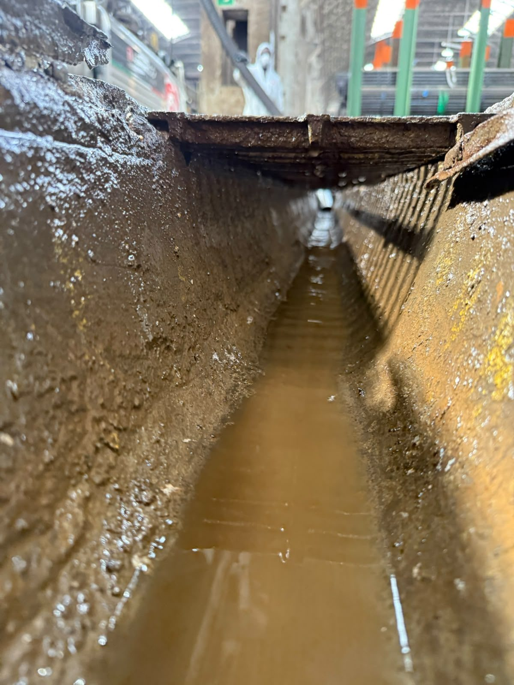
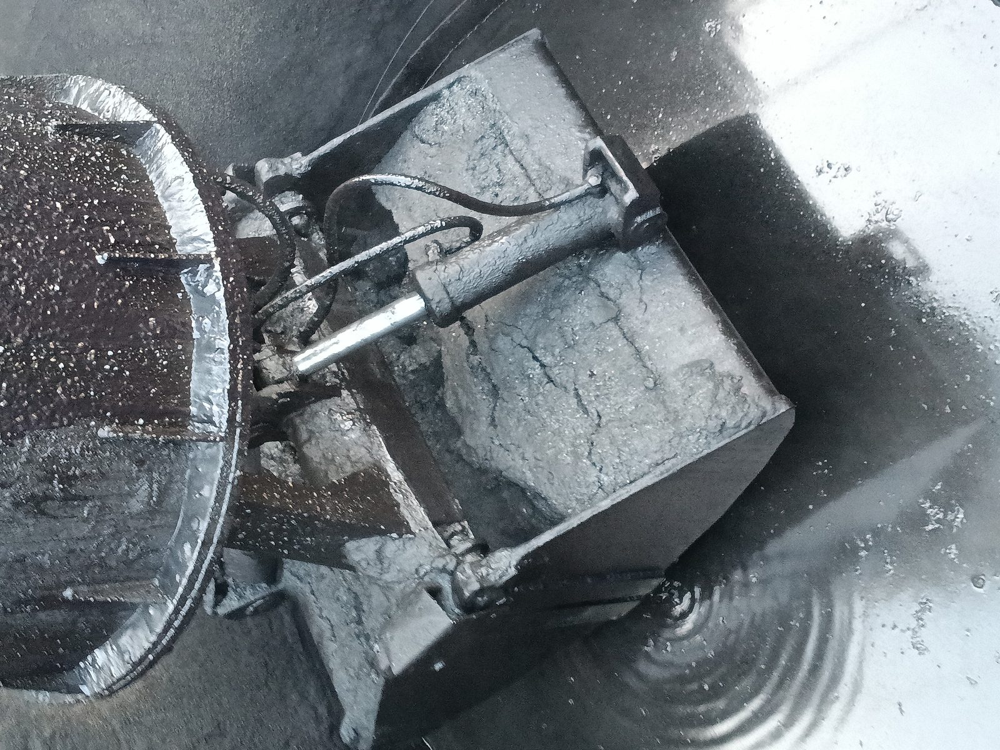
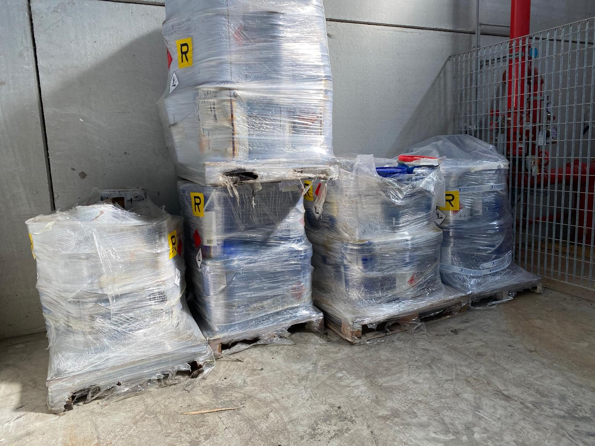

Gestione rifiuti
Classificazione, caratterizzazione, prescrizioni AIA, registri e organizzazione di impianto.
Perito chimico · Chimico (Albo Brescia 344 A) · Consulente ADR/RID
Mi occupo di rifiuti, prescrizioni ambientali e trasporto di merci pericolose. Il punto fermo è lo stesso da quando ho iniziato: stare sul processo, campionare, far girare l’impianto.
Chi sono
Sono Matteo Piemonti. Ho il diploma di perito chimico all’Istituto Castelli di Brescia. Ho poi frequentato Chimica Applicata e Ambientale all’Università degli Studi di Milano e, nel 2022, ho conseguito la laurea magistrale in Scienze e Tecnologie Chimiche all’Università degli Studi di Milano-Bicocca. Sono iscritto all’Ordine dei Chimici e dei Fisici di Brescia, n. 344 sezione A.
Ho iniziato subito a lavorare come ricercatore su impianti di produzione di biogas alimentati con matrici non zootecniche: scarti della produzione di olio di palma e fanghi di depurazione industriale, in un contesto di tecnologie chimico-fisiche e biologiche per il recupero e il riuso delle acque reflue (chimica, pharma, oil & gas, carta, tessile, food).
Successivamente ho avuto la responsabilità del laboratorio di controllo qualità sui prodotti finiti end of waste della filiera di recupero dei pneumatici fuori uso (PFU), con analisi chimiche, fisiche e meccaniche sul granulato di gomma. Il 5 luglio 2016 ho partecipato, presso la sede UNI di Milano, ai lavori del Working Group WG1 «Validation of CEN/TS 14243» del Comitato tecnico europeo CEN/TC 366 (Materials obtained from End-of-Life Tyres).
Sono poi passato al laboratorio ambientale: monitoraggio delle scadenze previste dalle Autorizzazioni Integrate Ambientali delle discariche, gestione dei campionamenti e delle analisi delle emissioni in atmosfera.
Da lì il passo successivo è stato la responsabilità di impianto per il trattamento e lo stoccaggio di rifiuti, con gestione operativa di cicli, miscelazioni e prescrizioni.
Cosa faccio adesso
Oggi lavoro come responsabile di gestione rifiuti, auditor sui sistemi ISO 9001, 14001 e 45001, e consulente ADR/RID per tutte le classi. Offro questi servizi ad aziende e gruppi, anche in parallelo all’attività industriale.
Classificazione, caratterizzazione, prescrizioni AIA, registri e organizzazione di impianto.
9001 qualità, 14001 ambiente, 45001 salute e sicurezza.
Certificato CE n. C07142, strada e ferrovia, tutte le classi, valido fino al 28/11/2027.
Corsi riservati, pensati per chi sta in impianto o in spedizione. Accesso con credenziali.
Immagini di lavoro
Foto da attività su impianti e stoccaggi.



Area riservata
Accesso con credenziali. Cambia utente e password in app.js prima di dare i corsi agli allievi.
Accesso effettuato.
Titoli
Iscrizione n. 344, sezione A — chimico. Delibera del 9 giugno 2022.
Apri PDFN. C07142. Strada e ferrovia, tutte le classi. Valido fino al 28 novembre 2027.
Apri PDFPartecipazione al WG1 del CEN/TC 366, validazione della CEN/TS 14243. Riunione UNI Milano, 5 luglio 2016.
Apri PDFContatto
Per un parere o una nomina: chiamata breve, senza impegno.
P. IVA 01864970197 · C.F. PMNMTT90R16G149A
Roccafranca (BS) · Nord Italia e incarichi nazionali